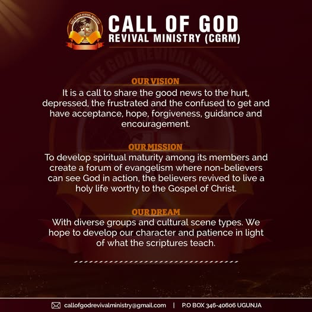

Word of God
Teaching and sharing the Word of God as the foundation of our faith.
A church in Ugunja, Siaya County, Kenya, focused on the Word of God, evangelism, and community missions.

Call of God Revival Ministry International is a church and religious organization located on Ugunja-Ukwala Road in Ugunja, Siaya County, Kenya.
Under the leadership of Bishop Fred K’owuor, the ministry focuses on teaching the Word of God, evangelism, and community missions.
To share the Word of God, proclaim the Gospel, and serve the community through missions.
Come meet usSharing the Gospel and serving people in our community.
Teaching and sharing the Word of God as the foundation of our faith.
Sharing the message of the Gospel and inviting others to discover faith.
Serving our community through missions and practical care.
To see people grow in faith through the Word of God and the hope of the Gospel.
We are a Christian ministry centered on the Word of God, evangelism, worship, and service to our community.
The ministry is based in Ugunja and led by Bishop Fred K’owuor. A founding date and fuller history have not been provided; contact the church for more about its story.

Join us each Sunday for worship and the Word of God. Our two services begin at 8:30 AM and 10:00 AM.
We are on Ugunja-Ukwala Road in Ugunja town, Siaya County, Kenya. From the Kisumu-Busia Highway (A1), head into Ugunja town and turn onto Ugunja-Ukwala Road. Follow the ministry’s Facebook page for updates and real-time directions.
Sunday services
8:30 AM & 10:00 AM
Ugunja-Ukwala Road
Ugunja, Siaya County 40606
Kenya
Led by Bishop Fred K’owuor
Contact us